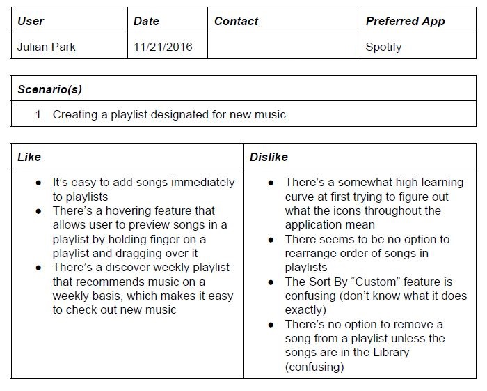
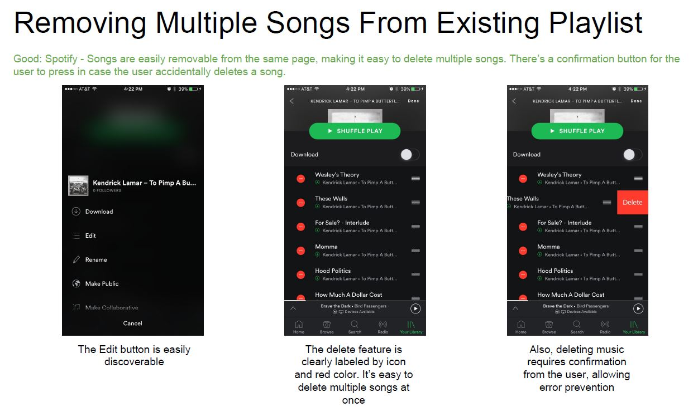
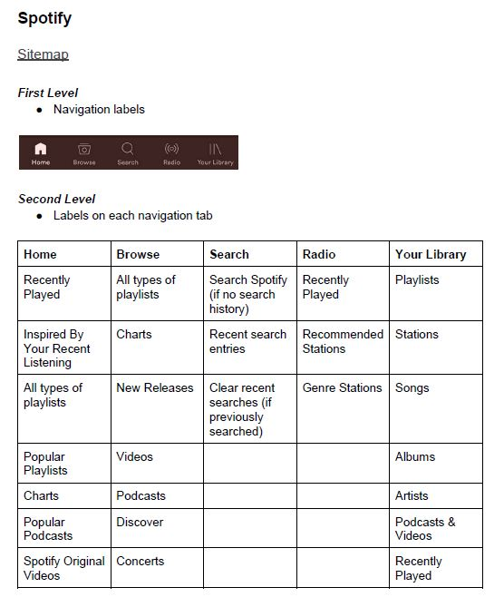

Designer & Information Architect
The following project required my team and I to create an information architecture wireframe for a redesign of a music streaming application. My team decided to redesign Spotify because its information architecture and layout was efficient. Based on interviews of people who listen to music regularly, a comparison of flows between popular music applications, and a comparative analysis of 3 popular music applications, we came up with our own information architecture and wireframe redesign of Spotify.
My team and I interviewed 9 people who regularly listen to music and create/manage playlists on their mobile device. We asked a series of questions related to what music application the users use and its functionalities, specifically with regards to playlists. The responses of the interviewees allowed us to note possible user scenarios when dealing with playlists on mobile music applications. Also, we recorded the users using their music applications for reflection later. The format below was used to organize the data we received from interviews.
After the interviews, we used the user scenarios and recordings to note screen sequences that had either good or bad flow for a certain scenario such as adding a song to a playlist. Then, we compared the screen sequences to those of other popular music applications for the same scenario. By doing so, we got to see the strengths and weaknesses of various music applications with regard to flow.
For the comparative analysis, we listed the first, second, and third level page labels and content for 3 popular music applications (Spotify, SoundCloud, Amazon Music). By listing out the labels and content on the first three levels of each music application, we were able to figure out the most commonly used labels and content, which facilitated our decision-making proccess for our information architecture redesign. Also, we listed out all the genres of each music application. The screenshot below shows the format used to note the labels and content on each level.
After the interviews, comparison of flows, and comparative analysis, we had enough data to create our own information architecture. We started developing our information architecture by listing the labels and content we would include. Afterwards, we started drawing sketches of how our music application redesign would look. The project only required the wireframes to work for 2 user scenarios: one for a create playlist scenario and another for a manage playlist scenario. Thus, we only had to sketch out the screens necessary for the scenarios we created. We sketched a bunch of screens before the actual wireframing process because it would give us an idea of what our music application would look like beforehand and save a lot of time. Below are some example sketches I drew.
The final part of the project required us to create a high-fidelity wireframe of our redesigned music application. We used Sketch to create the wireframes. We based our wireframes on the sketches we made, but with some additions and modifications. Then, we used Invision to make the wireframes clickable and flow in a specific sequence. The screenshots of some wireframe screens are shown below in the Product section.
The screenshots below are some of the high-fidelity wireframes we created shown on Invision.
The project as a whole was challenging because it required a lot of complex decision-making for design choices. I would have to say that the hardest part of the project was deciding on the information architecture and choosing what content to include in our redesign. There's so much content on music applications nowadays, and we had to cut a lot of that content based on our data analysis and what we thought was important. The design decisions were definitely the most challenging. The tasks within the assignments weren't tough, but time-consuming and require complex thinking.
By working on the project, I learned a lot of valuable design concepts such as branding, information architecture design, sketching, and wireframing. The project required a lot of time and effort, but it was interesting and fun redesigning a music application based on actual data as opposed to subjective ideas. I learned and realized the importance of comparative analysis and sketching before coding as well. Overall, I learned a bunch about web design, which will definitely complement my web development skills in the future.